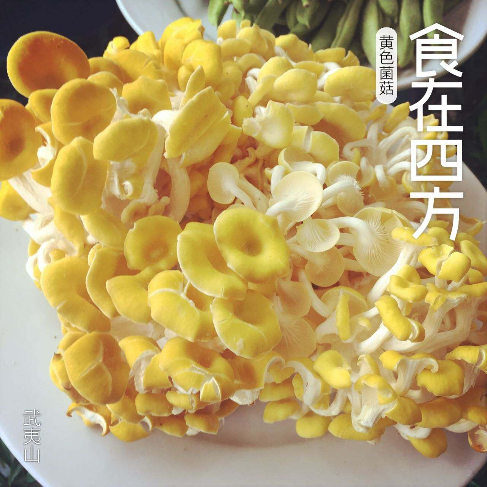
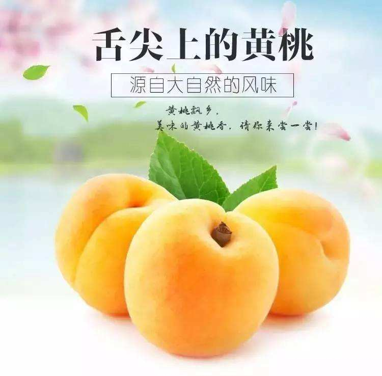

我是通信1902的罗承天，游戏溜的亚批,想玩游戏的可以加我加我加我！
接下来重点来了哦，睁大眼睛好好看着！！
家乡美食
1、玲珑王茶叶

唯有从原料开始的标准，才是真正的中国好茶标准。
玲珑王小叶茶领创严格“小叶茶”标准。根据鲜嫩等级，一片合格的玲珑王小叶茶茶叶
鲜叶长度仅为32-50mm，宽度仅有12-16mm，越小越嫩，等级越高，口感越鲜柔。
好茶，就是要简简单单一眼即辨。
2、黄菌菇

纯真天然的黄蘑菇产于祁连县境内的草原地带，每年七月中旬至八月中旬为盛产期，素有祁连八宝之美，称其中祁连额堡煌蘑菇含丰富粗蛋白，粗脂肪，粗纤维和异常丰富的氨基酸，维生素b的黄蘑菇，其肉质鲜嫩，营养丰富，色美味香，堪称祁连名贵特产，深受全国各界人士们的青睐
3、黄桃

黄桃又称黄肉桃，属于蔷薇科桃属，因肉为黄色而得名。常吃可起到通便、降血糖血脂、抗自由基、祛除黑斑、延缓衰老、提高免疫力等作用，也能促进食欲，堪称保健水果、养生之桃。
黄桃的营养十分丰富，含有丰富的抗氧化剂(α-胡萝卜素、β-胡萝卜素、番茄黄素、番茄红素及维生素C,抗自由基等)、膳食纤维（果肉中含有大量人体所需的果胶和纤维素，起到了协助消化吸收等许多作用）、铁钙及多种微量元素（硒、锌等含量明显，高于其他水果，是果中之王）。黄桃食时软中带硬，甜多酸少，有香气、水分中等，成熟糖度14~15度。